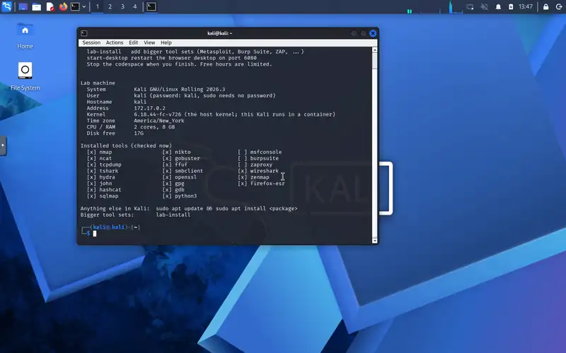

Kali Linux and Windows Server, in a browser tab.
Free lab machines for MAC courses at LaGuardia Community College. Kali in this tab needs only a web browser. The cloud machines also need a free GitHub account. Nothing to install.
Pick your course to see the machines it uses.

Lab machines
Kali in this tab runs inside your browser and needs no account. Every other button opens GitHub, where you press Create new codespace. If you already made that machine, GitHub offers to resume it.
Start a machine
-
Sign in to GitHub
Use your own free account at github.com. It is the same account you use for your lab repository.
-
Press a Launch button
GitHub opens a page for the machine you chose. Press Create new codespace. You do not need Change options.
-
Wait for the machine
GitHub builds the machine and opens an editor page. If the page asks whether you trust the authors, press Trust Folder & Continue. A desktop machine then opens its screen in a new tab. If your browser blocks the new tab, allow pop-ups for github.dev.
Stop it when you finish
A machine uses your free hours while it runs. It stops by itself after 30 minutes without activity, but stopping it yourself saves hours.
- Open github.com/codespaces.
- Find the machine in the list and open the menu at the end of its row.
- Choose Stop codespace. Your files stay.
- After you submit the lab, choose Delete. A stored machine uses your free storage. A Windows machine holds about 15 GB, which uses up the free 15 GB of storage if you keep it for a month.
GitHub deletes a stopped machine after 30 days without use.
Free hours each month
A free personal GitHub account gets 120 core hours and 15 GB of storage each month. Bigger machines spend hours faster.
| Machine size | Used by | Free account | Verified student |
|---|
Hours shown are per month. Verified students get 180 core hours and 20 GB at no cost through GitHub Education.
GitHub emails you when you have used 75, 90 and 100 percent. With no payment method on your account, GitHub does not charge you. Machines stop working until the allowance resets the next month.
What these machines are
- Kali is the official Kali Rolling image with a course tool set. Add any other Kali package with apt, or run
lab-installfor bigger sets such as Metasploit and Burp Suite. - Kali runs in a container on GitHub's servers. Tools that need a Wi-Fi card, a USB device or a kernel module do not work.
- Windows Server is Microsoft's evaluation edition, which works for 180 days. It installs fresh in each new machine.
- Each machine is private to you. Do not make its ports public.
Rules for security tools
- Scan and attack only the targets your instructor assigns, or machines you own.
- Never point these tools at college systems, GitHub, or any site on the internet without written permission.
- You are responsible for what your account does. GitHub can suspend accounts that break its rules.
If something goes wrong
What is Kali in this tab?
It is a real Linux kernel and the Kali tools, running inside your browser on an emulated 32-bit PC. It needs no account and uses none of your GitHub hours. It is slower than a cloud machine and has no internet and no desktop. Press Save machine before you close the tab, or your work is lost.
When do I use the 64-bit Kali in this tab?
Both machines run and debug the 64-bit Linux programs of a reverse engineering lab. The 32-bit machine does it through a built-in runner and is the faster one for most work. Use the 64-bit machine when a lab needs a real 64-bit system. It is slower, and during long, heavy work it can stop responding. If that happens, press Start over. It keeps only the folder ~/labs: press Save my files often.
The page asks whether I trust the authors
Press Trust Folder & Continue. The folder holds the lab files from this site. The terminal does not start until you do.
GitHub says the maximum number of running codespaces is reached
GitHub limits how many machines run at once. In our tests the limit was two. Open github.com/codespaces, stop a machine you are not using, then press Launch again.
The desktop tab did not open
In the editor page, open the Ports panel at the bottom. Hover over the row for port 6080 (Kali) or 8006 (Windows) and press the globe icon.
The Kali desktop is black or frozen
Right after a start, wait a minute and reload the desktop tab. If that does not help, open a terminal in the editor page and run start-desktop --restart. Then reload the desktop tab.
Windows shows an error about KVM or runs out of disk space
Delete the machine at github.com/codespaces and launch Windows Server 2019 again. If it fails twice, send your instructor a screenshot of the message.
Windows is very slow
Every machine starts on 2 cores. Stop the machine, open github.com/codespaces, open the menu at the end of its row and choose Change machine type. Pick 4-core and start the machine again. A 4 core machine uses your free hours twice as fast.
GitHub says I have no hours left
Without a payment method, GitHub blocks new and stopped machines until your allowance resets at the start of your next monthly billing cycle. Until then, use the lab computers on campus. To get a larger allowance, apply for GitHub Education as a verified student.
I closed the tab. Is my work gone?
No. Open github.com/codespaces, find the machine and choose Open in Browser. Files stay until you delete the machine.
Can I use this on a phone or tablet?
It opens, but a laptop or desktop computer with a keyboard works much better.